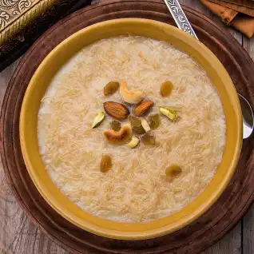

Sheer Kurma

Ingredients
- 5 large sweet potatoes, peeled and quartered
- ¾ cup packed brown sugar
- 2 tablespoons butter, melted
- 1 ⅓ cups pecans
ordered list
- Step
Preheat oven to 375 degrees F (190 degrees C). Lightly grease a medium baking dish.
- step
Boil the sweet potatoes in a large saucepan approximately 10 minutes, or until tender.
- step
AIn a large bowl, mix together the sweet potatoes, brown sugar, milk, butter and flour. Transfer the mixture to the baking dish. Sprinkle with pecans and coconut.
- step
Bake 30 minutes in the preheated oven.